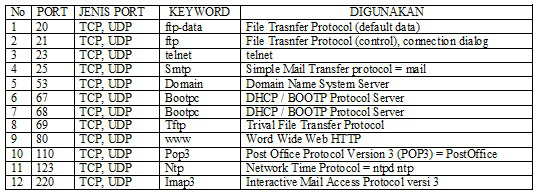

Model Referensi TCP/IP

Pengertian TCP/IP adalah singkatan dari Transmission Control Protocol/Internet Protocol. TCP/IP merupakan standar komunikasi data yang digunakan untuk dalam proses tukar-menukar data dari satu komputer ke komputer lain pada jaringan Internet. Karena berupa kumpulan protokol (protocol suite) maka Protokol ini tidaklah mampu berdiri sendiri. TCP/IP merupakan yang paling banyak dipakai pada saat ini. Data tersebut diimplementasikan dalam bentuk software atau perangkat lunak pada sistem operasi. Istilah yang diberikan kepada perangkat lunak tersebut yaitu TCP/ IP stack. Atau pengertian TCP/IP yaitu sebuah software jaringan komputer yang terdapat pada satu sistem dan memungkinkan komputer satu dengan komputer yang lain bisa mentransfer data dalam satu grup jaringan/ network.

Nomor port atau Port number pada jaringan komputer merupakan angka biner sepanjang 16 bit yang berfungsi sebagai nomor untuk layanan yang digunakan didalam jaringan komputer. Port Number pertama kali dikenalkan oleh pasangan protokol TCP (Transmission Control Protocol) dan UDP (User Datagram Protocol). Protokol TCP dan UDP merupakan protokol yang telah ada sejak jaringan komputer diciptakan.Kedua pada tersebut berada pada lapisan Transport Layer.
Fungsi Port Number :
1. Port serial digunakan untuk mentransmisikan data dari jarak jauh secara lambat, seperti keyboard, mouse, monitor, dan modem dial-up.
2. Port paralel untuk mentransmisikan data pada jarak yang pendek secara cepat. Port ini sering dipakai untuk menghubungkan printer, disk eksternal, atau tape magnetik untuk bacup.
3. Port SCSI (small computer system interface), untuk mentransmisikan data secara cepat bahkan dapat dipakai untuk 7 alat sekaligus atau “daisy chain“. Contoh daisy chain : dari SCSI kontroller kemudian disambungkan ke perangkat hardisk drive eksternal, dari HDD eksternal disambungkan secara seri ke perangkat yang lain seperti tape drive, kemudian dari tape drive tsb bisa juga disambungkan ke CD/DVD drive dan seterusnya.
4. Port USB (universal serial bus), untuk mentransmisikan data hingga 127 periferal dalam rangkaian daisy chain.
5. Port tambahan khusus seperti : FireWire, MIDI, IrDa, Bluetooth, dan ethernet. Fire Wire berfungsi untuk camcorder, pemutar DVD, dan TV. Sedangkan port MIDI (musical instrument digital interface) untuk menghubungkan instrumen musik. Kemudian port IrDA (Infrared Data Association) untuk koneksi nirkabel sejauh beberapa kaki. Port Bluetooth adalah gelombang radio jarak pendek yang bisa menstransmisikan sejauh 9 m.
6. Port ethernet adalah untuk LAN.
Checksum adalah skema kesalahan-deteksi sederhana di mana setiap pesan yang dikirim yang menghasilkan nilai numeric berdasarkan byte dalam pesan. Pengirim menempatkan nilai yang dihitung dalam pesan (biasanya di header pesan ) dan mengirimkan nilai pada pesan. Penerima menerapkan rumus yang sama untuk masing-masing menerima pesan dan memeriksa untuk memastikan nilai numeric adalah sama. Jika tidak, penerima dapat mengasumsikan bahwa pesan telah rusak dalam transmisi.
Jaringan transmisi data yang sering menghasilkan kesalahan, seperti toggled, hilang atau bit diduplikasi. Akibatnya, data yang diterima mungkin tidak sama dengan data yang di kirim, yang jelas hal yang buruk.
Karena kesalahan transmisi ini, protocol jaringan yang sangat sering menggunakan checksum untuk mendeteksi kesalahan tersebut. Pemancara akan menghitung checksum dari data dan mengirimkan data bersama-sama dengan checksum. Penerima akan menghitung checksum dari data yang diterima dengan algoritma yang sama dengan pemancar.jika diterima akan dihitung checksum tidak cocok, kesalahan transmisi telah teerjadi.
Jika terjadi kesalahan yang tidak dapat dipulihkan , sisi penerima membuang paket. Tergantung pada protocol jaringan, kehilangan data hanya diabaikan atau sisi pengirim kebutuhan untuk mendeteksi kerugian ini, entah bagaimana dan mentransmisikan kembali paket yang diperlukan.
Ada beberapa jenis checksum, sebuah contoh alroritma checksum yang sering digunakan adalah CRC32. Yang lainya adalah MD5. Algoritma md5 checksum untuk menghasilkan informasi yang pada awalnya dikembangkan untuk menghasilkan sebuah sidik jari yang unik untuk berkas sebelum berkas terenkripsi sehingga validitas dari file dekripsi dapat dijamin.
Fungsi Layer Transport
1. Menerima data dari session layer
2. Memecah data menjadi bagian – bagian yang lebih kecil
3. Meneruskan data ke network layer
4. Memastikan bahwa semua data yang melewatinya dapat tiba di sisi lainnya dengan tepat
5. Mengirim segment dari satu host ke host yang lain
6. Memastikan realibilitas data
7. Mengatur lalu lintas dari sebuah jaringan
Mengapa Model Referensi dibuat berlayer?
1. Setiap lapisan memiliki fungsi dan proses yang berbeda.
2. Fungsi setiap lapisan dipilih berdasarkan penetapan protokol yang telah memenuhi standar internasional.
3. Sebuah lapisan harus dibuat bila diperlukan tingkat abstraksi yang berbeda.
4. Batasan lapisan harus ditentukan agar dapat meminimalkan arus informasi yang melewati interface.
5. Jumlah lapisan diusahakan sesedikit mungkin sehingga arsitektur jaringan tidak menjadi sulit dipakai.